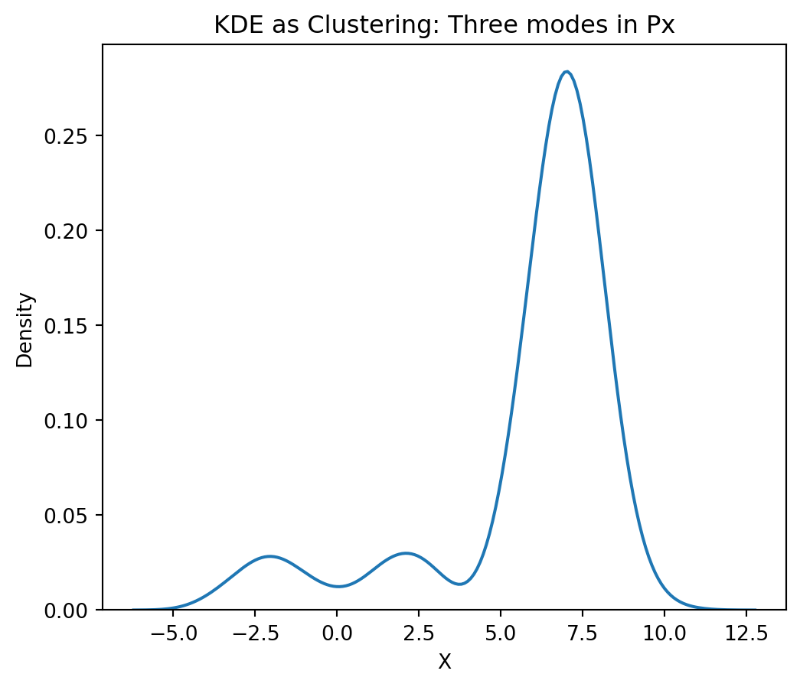
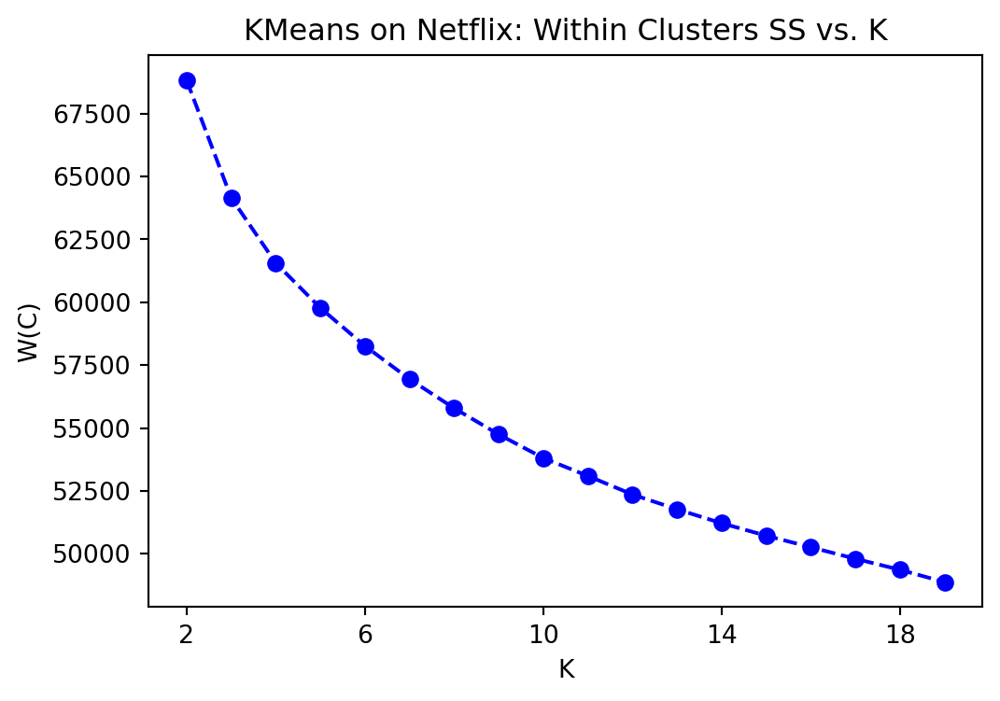
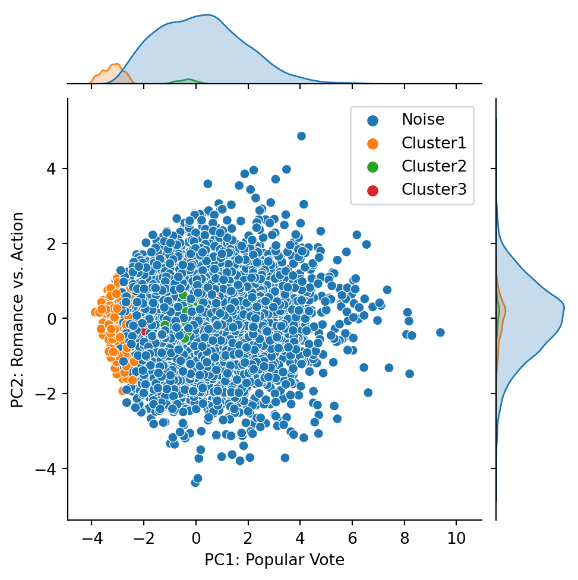
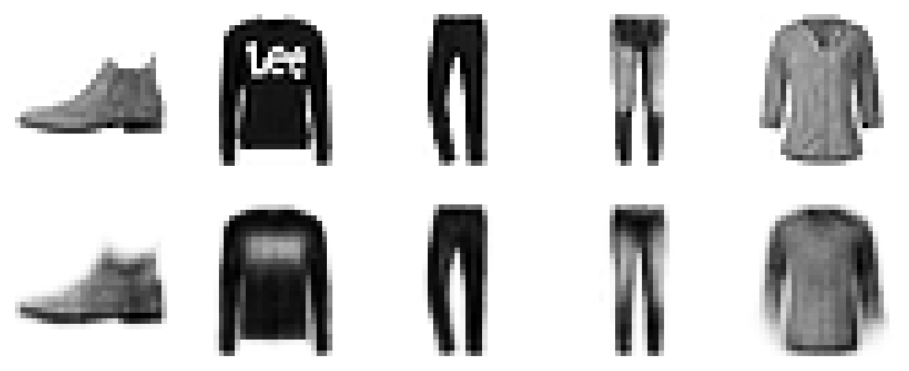

Introduction to Data Science
Unsupervised Learning: Cluster Analysis - Class 15
Giora Simchoni
gsimchoni@gmail.com and add #intro2ds in subject
Stat. and OR Department, TAU
Intro. to Unsupervised Learning
From Supervised to Unsupervised
Recall: each observation is made of a vector \(x \in \mathcal{X}\) (for example \(x \in \mathbb{R}^p\)) and a scalar \(y\)
Our goal is to build a model of the relationship between \(x\) and \(y\): \[y \approx f(x)\]
IID assumption: each pair \((x_i, y_i)\) is drawn indepednently from some distribution \(P_{x,y}\)
A modeling approach takes \((X, y)\) as input and outputs a prediction model \(\hat{f}(x)\)
In prediction: we get a new value \(x_0\) and predict \(\hat{y}_0 = \hat{f}(x_0)\).
How good is our prediction? We typically define a loss function \(L(y,\hat{y})\) and the quality of the model is \(\mathbb{E}_{x_0,y_0}(L(y_0, \hat{y}_0))\)
What if there is no \(y\)?
Unsupervised Learning
Now: each observation is made of a vector \(x \in \mathcal{X}\) (for example \(x \in \mathbb{R}^p\))
IID assumption: each observation \(x_i\) is drawn indepednently from some distribution \(P_{x}\)
Our goal is to learn distrubution \(P_{x}\) (or properties of it)
“without a supervisor”
- Example: Clustering = Finding modes of \(P_{x}\) with high density
- If we do find them, maybe \(P(X)\) can be represented by a mixture of simpler densities?
- This isn’t new, is it?
KDE as unsupervised learning
Will typically work for \(p \le 3\), above that: “curse of dimensionality”
Cluster Analysis
Group a set of observations into subsets, clusters, s.t. those within each cluster are more closely related to one other than observations assigned to different clusters
What for?
- EDA, Feature Engineering: interesting groups in the data
- Segmentation: customers, products, distribution centers location, software
- Hierarchy: diseases, evolution
- Deduplication
- Anomaly Detection
Many, many algorithms:
- Partition clustering: K-means
- Hierarchical clustering: Agglomerative
- Density-based clustering: DBSCAN
Example: Microarray Clustering
Unsupervised Learning Main Drawback
Unless there is “ground truth”, no clear measure of success (as opposed to \(\mathbb{E}_{x_0,y_0}(L(y_0, \hat{y}_0))\))
Many times involves scrutinizing results and interpretation
Not for the faint of heart
K-means Clustering
How to evaluate a partition?
Assume \(K\) clusters are given
\(C(i) = k\) is some function assigning cluster \(k \in \{1, \dots, K\}\) to observation \(i \in \{1, \dots, n\}\)
\(d(x_i, x_j)\) is a distance metric for pair \(i, j\), e.g. Euclidean
We wish to minimize the extent to which observations assigned to the same cluster tend to be close to one another
The “within cluster” scatter/loss: \[W(C) = \frac{1}{2}\sum_{k = 1}^K \sum_{C(i) = k} \sum_{C(j) = k} d(x_i, x_j)\]
equivalent to maximizing \(B(C) = \frac{1}{2}\sum_{k = 1}^K \sum_{C(i) = k} \sum_{C(j) \neq k} d(x_i, x_j)\)
Can we go over all possible \(C(i)\) to find the global minimum?
Road to K-means
Euclidean distance: \(d(x_i, x_j) = \sum_{m=1}^p (x_{im} - x_{jm})^2 = ||x_i - x_j||^2\)
Can show that: \(W(C) = \frac{1}{2}\sum_{k = 1}^K \sum_{C(i) = k} \sum_{C(j) = k} ||x_i - x_j||^2 = \sum_{k = 1}^K n_k \sum_{C(i) = k} ||x_i - \bar{x}_k||^2\)
\(\bar{x}_k \in \mathbb{R}^p\) being the mean in cluster \(k\), and \(n_k\) number of observations in cluster \(k\)
But for any set of observations \(S\), which \(m\) would minimize \(\sum_{i \in S} ||x_i - m||^2\)?
Thus, the final goal of K-means: \[$\min\limits_{C, m_1, \dots, m_K} \sum_{k = 1}^K n_k \sum_{C(i) = k} ||x_i - m_k||^2\]
K-means
Start with initial guess for \(m_1, \dots, m_K\)
Assign each observation to the closest cluster mean. That is: \[C(i) = \arg\min\limits_{k = 1\dots K} ||x_i - m_k||^2\]
Update means \(m_1, \dots, m_K\). That is the centroids: \[m_k = \frac{\sum_{C(i) = k}x_i}{n_k}\]
Repeat 1 and 2 until \(C(i)\) doesn’t change
Convergence is guaranteed (steps 1 and 2 can only reduce \(W(C)\))
Global optimum is NOT guaranteed
Can try many different initial starting points
K-means Demo: Initial Guess

K-means Demo: Iteration 1
K-means Demo: Iteration 2
K-means Demo: Iteration 3
K-means on Netflix
What did we get?
(2, 14)[1 0 0 1 1 1 0 0 0 1]68827.02Can easily “predict”:
array([0, 1, 0, 0, 1, 0, 1, 0, 0, 0])K-means on Netflix: the Centroids
pd.DataFrame({'title': kmeans.feature_names_in_,
'mean_score': NE_Xtr.mean(axis = 0),
'm_1': kmeans.cluster_centers_[0],
'm_2': kmeans.cluster_centers_[1]}).set_index('title').head(8).round(2)| mean_score | m_1 | m_2 | |
|---|---|---|---|
| title | |||
| Independence Day | 4.14 | 4.47 | 3.77 |
| The Patriot | 4.11 | 4.45 | 3.72 |
| The Day After Tomorrow | 3.70 | 4.15 | 3.20 |
| Pirates of the Caribbean | 4.35 | 4.57 | 4.11 |
| Pretty Woman | 4.08 | 4.38 | 3.73 |
| Forrest Gump | 4.51 | 4.67 | 4.34 |
| The Green Mile | 4.46 | 4.69 | 4.20 |
| Con Air | 3.72 | 4.13 | 3.27 |
K-means on Netflix: “discrete” first PC!
Code
from sklearn.decomposition import PCA
X_centered = NE_Xtr - NE_Xtr.mean(axis=0)
pca = PCA(n_components=2)
pca.fit(X_centered)
T = pca.transform(X_centered)
c_dict = {0:'Cluster1', 1:'Cluster2', 2:'Cluster3', 3:'Cluster4'}
clusters = np.vectorize(c_dict.get)(kmeans.labels_)
ax = sns.jointplot(x=T[:, 0], y=T[:, 1], hue=clusters, height=5)
ax.set_axis_labels('PC1: Popular Vote', 'PC2: Romance vs. Action', fontsize=10)
plt.show()K-means on Netflix: higher \(K\)
K-means Issues
How to choose \(K\)?

The “elbow” method won’t always work, there are others.
Should you always standardize?
As with KNN, K-means would be higly influenced by a feature with high variance.
But what if that feature is important for clustering?
Code
from sklearn.preprocessing import StandardScaler
n = 30
m1 = 2
m2 = 0
sig = np.eye(2)
rng = np.random.RandomState(4)
X1 = rng.multivariate_normal(mean=[-m1, m2], cov=sig, size=n)
X2 = rng.multivariate_normal(mean=[m1, m2], cov=sig, size=n)
X = np.concatenate([X1, X2], axis=0)
kmeans = KMeans(n_clusters=2, random_state=0).fit(X)
fig, axes = plt.subplots(nrows=1, ncols=2, figsize=(10, 5))
axes[0].scatter(X[:, 0], X[:, 1], c=kmeans.labels_, cmap='viridis')
axes[0].set_xlim((-6, 6))
axes[0].set_ylim((-6, 6))
axes[0].set_title('K-means without standardizing')
X_stan = StandardScaler().fit_transform(X)
kmeans_stan = KMeans(n_clusters=2, random_state=0).fit(X_stan)
axes[1].scatter(X_stan[:, 0], X_stan[:, 1], c=1-kmeans_stan.labels_, cmap='viridis')
axes[1].set_xlim((-6, 6))
axes[1].set_ylim((-6, 6))
axes[1].set_title('K-means with standardizing')
plt.show()K-means failures (I)
Prefers separable spherical clusters (Gaussian).
K-means failures (II)
Always specify \(K\).
K-means failures (III)
No concept of outliers.
K-means failures (IV)
Bad with unequal densities, unequal cluster sizes.
DBSCAN
Density Based Clustering
Back to premise, data comes from a distribution: \(X \sim P_x\)
Estimating \(P_x\) is hard
Find high-density regions through connected components
- Immediate Pros:
- No specifying \(K\)
- Outliers
- More complex clustering structures
DBSCAN
Density-Based Spatial Clustering of Applications with Noise

- 3 types of points: core, border, noise
- Core points are high-density points (parameters: \(\varepsilon\) (radius), \(minPts\))
- Connect core points into clusters
- Assign border points to clusters
- All else: noise
DBSCAN - Abstract
DBSCAN - Actual
K-means on Netflix
What did we get?
(305,)[-1 -1 -1 -1 -1 -1 0 -1 0 -1]
{-1: 7390, 0: 494, 1: 109, 2: 7}
no. of noise points: 7390No concept of prediction!
AttributeError: 'DBSCAN' object has no attribute 'predict'K-means on Netflix: Weak relation to PCA?
Code
from sklearn.decomposition import PCA
X_centered = NE_Xtr - NE_Xtr.mean(axis=0)
pca = PCA(n_components=2)
pca.fit(X_centered)
T = pca.transform(X_centered)
c_dict = {-1: 'Noise', 0:'Cluster1', 1:'Cluster2', 2:'Cluster3', 3:'Cluster4'}
clusters = np.vectorize(c_dict.get)(dbscan.labels_)
ax = sns.jointplot(x=T[:, 0], y=T[:, 1], hue=clusters, height=5)
ax.set_axis_labels('PC1: Popular Vote', 'PC2: Romance vs. Action', fontsize=10)
plt.show()
DBSCAN on K-means Failures
DBSCAN on K-means Failures (I)
DBSCAN on K-means Failures (II)
DBSCAN on K-means Failures (III)
DBSCAN on K-means Failures (IV)
DBSCAN vs. K-means Summary
| Method | Pros | Cons |
|---|---|---|
| K-means | Faster, Scalable, Simple Related to other methods (PCA, EM, GMM) |
Need \(K\) Separable spherical clusters No outliers Bad with unequal densities Only Euclidean distance |
| DBSCAN | Complex structures No need of \(K\) Any distance metric Outliers |
Slower Very sensitive to \(\varepsilon, minPts\) Bad with unequal densities |
Clustering after Dimensionality Reduction
The FNIST Dataset
from tensorflow.keras.datasets import fashion_mnist
from sklearn.decomposition import PCA
(X_train, y_train), (X_test, y_test) = fashion_mnist.load_data()
X_train = X_train.astype(np.float32) / 255
X_test = X_test.astype(np.float32) / 255
print(X_train.shape)
print(y_train.shape)(60000, 28, 28)
(60000,)K-means on FNIST
kmeans = KMeans(n_clusters=10)
kmeans.fit(X_train_flat)
print(pd.crosstab(y_train, kmeans.labels_).rename(index=fnist_dict))col_0 0 1 2 3 4 5 6 7 8 9
row_0
T-shirt/top 167 27 0 3404 23 201 2 0 1583 593
Trouser 63 0 0 236 3 5413 0 0 129 156
Pullover 3519 27 1 115 27 9 1 0 1786 515
Dress 49 7 0 1684 5 3209 0 0 524 522
Coat 3596 29 0 873 15 154 0 0 1081 252
Sandal 0 13 258 2 4 1 1444 475 29 3774
Shirt 1954 17 1 1053 62 62 6 0 2071 774
Sneaker 0 0 22 0 1 0 4702 764 0 511
Bag 269 2449 6 22 2202 28 238 62 228 496
Ankle boot 1 0 2615 2 4 2 177 2994 35 170Metrics for evaluating clustering vs. ground truth: Rand index, Mutual information, V-measure…
Recall: PCA might discover clusters
Does it improve clustering?
kmeans = KMeans(n_clusters=10)
kmeans.fit(T)
print(pd.crosstab(y_train, kmeans.labels_).rename(index=fnist_dict))col_0 0 1 2 3 4 5 6 7 8 9
row_0
T-shirt/top 1203 203 8 17 1009 2924 42 379 6 209
Trouser 1239 51 0 4 4454 182 1 45 1 23
Pullover 478 1563 34 58 13 119 155 1411 7 2162
Dress 1515 71 0 1 2768 1462 3 153 0 27
Coat 340 1744 7 55 226 750 62 759 5 2052
Sandal 45 7 1737 12 1 1 3847 112 238 0
Shirt 1002 1118 36 59 321 802 170 1299 14 1179
Sneaker 0 0 2886 9 0 0 2716 3 386 0
Bag 294 220 410 2406 14 16 158 1165 1077 240
Ankle boot 10 107 1045 1067 1 0 73 272 3423 2Increasing latent dimension \(q\)
pca = PCA(n_components = 30)
pca.fit(X_train_flat_centered)
T = pca.transform(X_train_flat_centered)
kmeans = KMeans(n_clusters=10)
kmeans.fit(T)
print(pd.crosstab(y_train, kmeans.labels_).rename(index=fnist_dict))col_0 0 1 2 3 4 5 6 7 8 9
row_0
T-shirt/top 31 590 3403 0 199 22 1586 2 0 167
Trouser 0 156 238 0 5411 3 129 0 0 63
Pullover 27 517 115 0 9 29 1782 1 1 3519
Dress 7 524 1685 0 3200 5 530 0 0 49
Coat 29 253 874 0 153 16 1073 0 0 3602
Sandal 13 3762 2 484 1 4 29 1445 260 0
Shirt 17 773 1056 0 59 64 2068 7 1 1955
Sneaker 0 515 0 760 0 2 0 4701 22 0
Bag 2441 492 22 63 26 2213 231 240 6 266
Ankle boot 0 169 2 2999 3 4 35 178 2609 1Autoencoders
- A branch of unsupervised learning: Representation Learning
- How do we learn representations useful for downstream tasks (e.g. clustering)
- Most basic AE: Encode \(x_i \in \mathbb{R}^p\) via encoder network \(f\) to lower dimension \(q\), decode with decoder network \(g\) back to dimension \(p\), such that: \(x_i \approx g(f(x_i))\)
- \(f(x_i) \in \mathbb{R}^q\) hopefully represents the data well
AE with Keras
from tensorflow.keras import Sequential
from tensorflow.keras.layers import Dense, Flatten, Reshape
stacked_encoder = Sequential([
Flatten(input_shape=[28, 28]),
Dense(100, activation="relu"),
Dense(30, activation="relu"),
])
stacked_decoder = Sequential([
Dense(100, activation="relu", input_shape=[30]),
Dense(28 * 28, activation="sigmoid"), # make output 0-1
Reshape([28, 28])
])
stacked_ae = Sequential([stacked_encoder, stacked_decoder])
stacked_ae.compile(loss='mse', optimizer='adam')
history = stacked_ae.fit(X_train, X_train, epochs=20, verbose=0)Can it reconstruct?
def show_reconstructions(sae, images, n_images=5):
reconstructions = sae.predict(images[:n_images], verbose=0)
fig = plt.figure(figsize=(n_images * 1.5, 3))
for image_index in range(n_images):
plt.subplot(2, n_images, 1 + image_index)
plt.imshow(images[image_index], cmap='binary')
plt.axis('off')
plt.subplot(2, n_images, 1 + n_images + image_index)
plt.imshow(reconstructions[image_index], cmap='binary')
plt.axis('off')
show_reconstructions(stacked_ae, X_test)
plt.show()
Does it improve clustering?
kmeans = KMeans(n_clusters=10)
kmeans.fit(T)
print(pd.crosstab(y_train, kmeans.labels_).rename(index=fnist_dict))col_0 0 1 2 3 4 5 6 7 8 9
row_0
T-shirt/top 3299 1 90 1 1791 600 0 3 211 4
Trouser 17 0 37 0 489 561 1 0 14 4881
Pullover 15 0 3122 0 2039 64 0 0 760 0
Dress 80 0 140 0 1082 3699 0 0 24 975
Coat 3 1 3777 0 1068 847 1 0 299 4
Sandal 0 1960 0 1542 591 1 1267 617 22 0
Shirt 719 5 1684 0 2619 396 0 1 572 4
Sneaker 0 1808 0 3199 61 0 111 820 1 0
Bag 4 485 331 10 1175 367 8 593 3022 5
Ankle boot 0 232 1 79 189 1 3343 2141 14 0